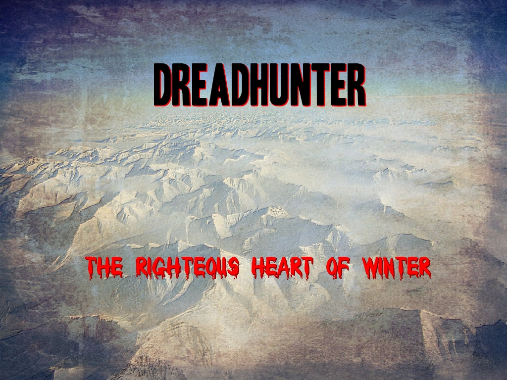

Click to play
The foul magic of the wizard has consumed the lowlands.
Their towns and homes lie ruined, smoldering in endless night.
All hope has left the hearts of the people, no heroes are left to hear their wails of despair and suffering.
But, unbeknownst to the piteous masses, there is one who may yet save them.
Less than a man but more than a mere ghost, the warrior who walks beyond death seeks allies in his quest for vengeance.
A vision given by the old gods grips his mind.
A vast waste of icy desert, a wall of impenetrable peaks, an ancient stronghold and a black shadow lying in wait.
Death walks, slowly, to the frozen north.